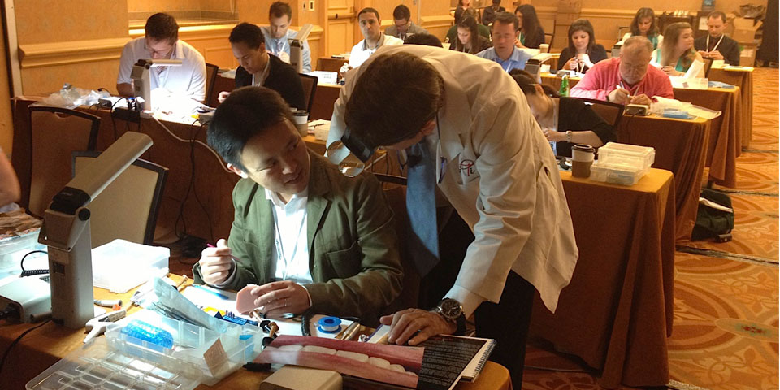

一般家庭から歯学部に入学した時に驚いたことがあります。
「親御さんが歯科医師の同級生の口の中には、なぜ銀歯がないのか？
僕の口の中は銀歯だらけなのに…」
大学４年生の時に講義を受けて、その答えが解りました。
『虫歯や歯槽膿漏（歯周病）は予防ができる！！』
当院では『私たちが受けたい歯科治療をそのまま患者さんに提案する！』をモットーに、
皆様お一人一人に合った治療計画を立て、十分な説明を行い、双方が納得した上で治療を進めます。
綺麗な歯で、美味しく食事が出来るようになった後は、その状態を長期間保てるように、痛く
ない時に通って頂く、『予防＆かかりつけ歯科医院』として、長くお付き合いさせて頂ければと思います。
2005年5月、長崎県の生月島という場所で開業した時は、歯科業界のほとんどの人から、そんな場所で自費診療なんて無理だと言われました。
場所は関係ないと考えておりましたので、「私達が受けたい歯科医療を、そのまま患者さんに提案する。」という理念のもと、スタッフと共にたくさんの研修会に参加し精進を続けてきました。
その結果、現在、歯科医師１名、受付&TC1名、歯科衛生士5名という体制で一人当たりの売上は、業界の平均を大きく上回る日々歯科医療を楽しむクリニックが出来ました。
